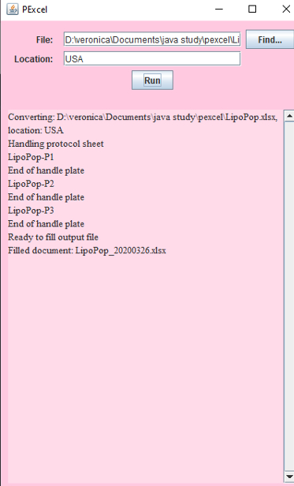

|
Built using Visual Studio Code, Java. About 400 lines of code. Pexcel was the first independent coding project I worked on. I developed it over the summer during COVID quarantine as a way to engage myself when I couldn't really do anything else. Pexcel was "commissioned" by my older sister, who was working as a scientist in the pharmaceutical research industry. They had a task that involved manually going through an excel sheet, taking the information, and formatting it into a different excel sheet. My task was to automate this job so that an employee would only have to select the file to be processed, saving many hours of work. Additionally, I also built a small GUI so that the program could be operated easily without command line prompts. |
 |